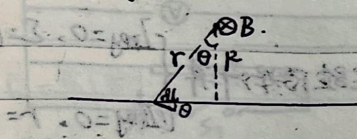
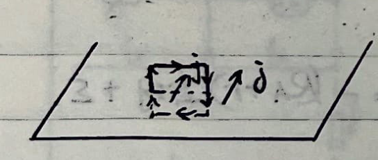
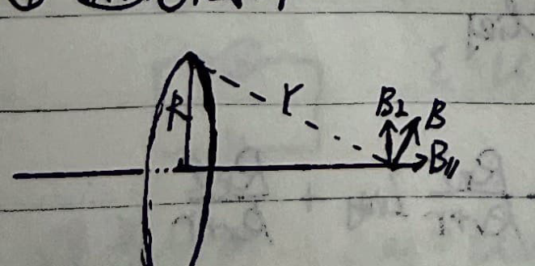
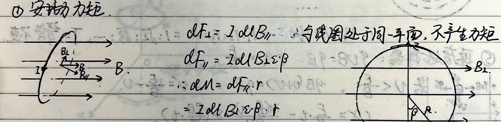
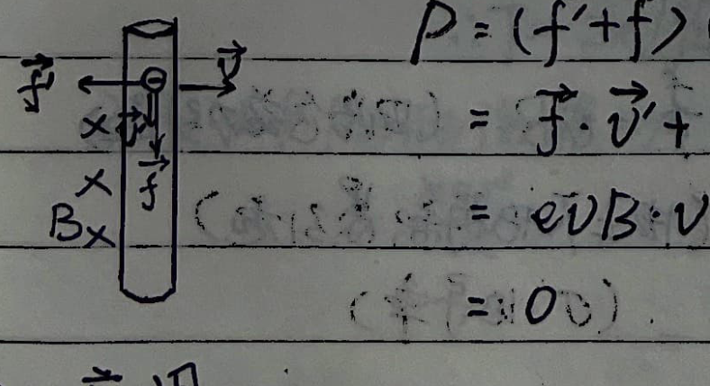
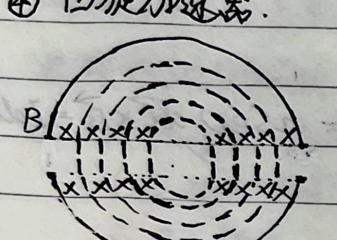
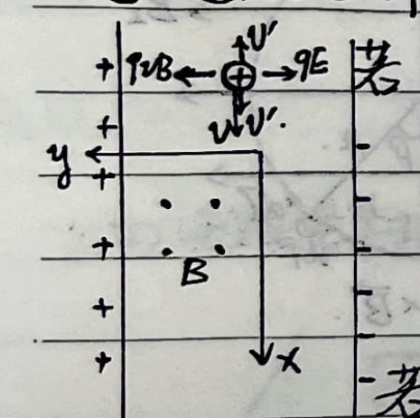
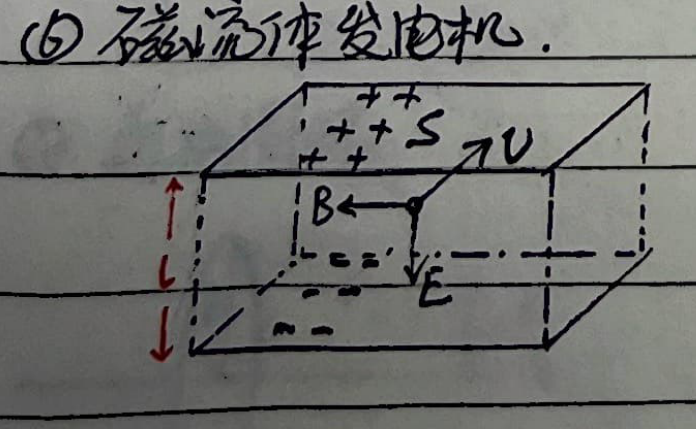
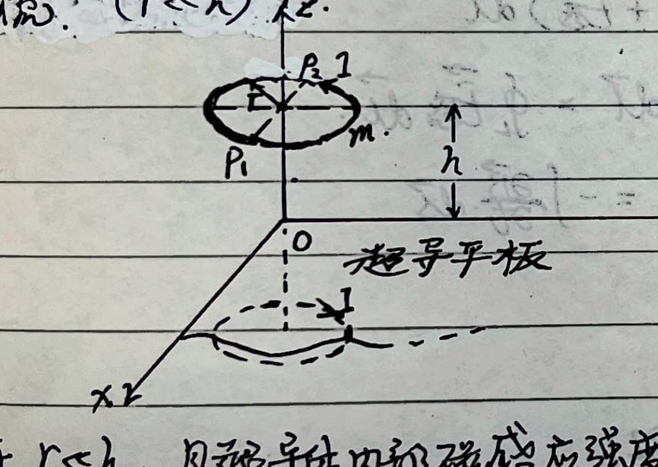
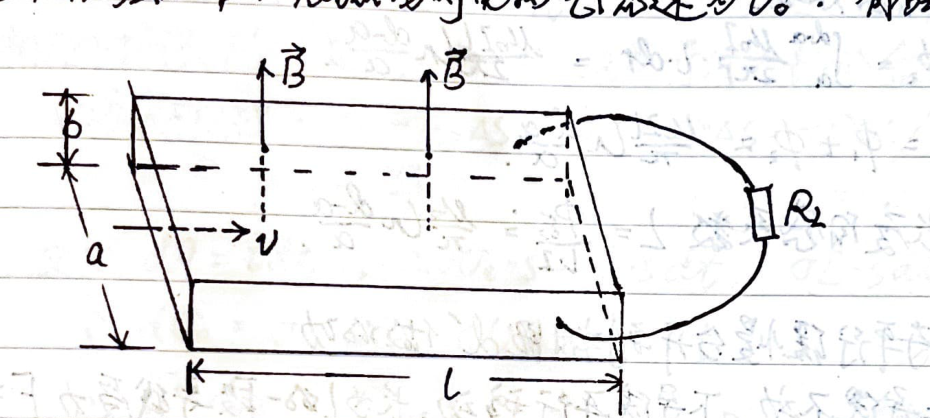

Part 11: Static Magnetic Field
1. Biot-Savart Law
$$ d\vec{B} = \frac{\mu_0}{4\pi} \frac{I d\vec{l} \times \hat{r}}{r^2}, \quad \vec{B} = \int d\vec{B} $$2. Gauss's Law & Ampere's Circuital Law
- Gauss's Law for Magnetism: $\oint_S \vec{B} \cdot d\vec{S} = 0$
- Ampere's Circuital Law: $\oint_L \vec{B} \cdot d\vec{l} = \mu_0 \sum I$
3. Typical Current-Carrying Magnetic Fields
① Infinite and Finite Wire:
- Infinite Wire (Current $I$): $$ B \cdot 2\pi r = \mu_0 I \implies B = \frac{\mu_0 I}{2\pi r} $$
- Finite Wire (Current $I$):

$$ dB = \frac{\mu_0}{4\pi} \frac{I dl \cos\theta}{r^2} = \frac{\mu_0}{4\pi} \frac{I \cdot \left(\frac{R}{\cos^2\theta} d\theta\right) \cos\theta}{\left(\frac{R}{\cos\theta}\right)^2} = \frac{\mu_0 I \cos\theta d\theta}{4\pi R} $$
② Infinite Wide Flat Plate (Current density $j$):

③ Infinite Cylindrical Surface: (Radius $R$, uniform current $I$ on surface)
$$ \begin{cases} r \ge R: & B \cdot 2\pi r = \mu_0 I \implies B = \frac{\mu_0 I}{2\pi r} \\ r < R: & B = 0 \end{cases} $$④ Current-Carrying Ring:

⑤ Current-Carrying Solenoid: (Turns per unit length $n$, total turns $N$, current per turn $I$)
$$ dl = n I dl \implies dB = \frac{\mu_0 R^2 n I dl}{2 r^3} $$ $$ \text{Also, } dl = \frac{r d\theta}{\sin\theta} \text{ and } r = \frac{R}{\sin\theta} $$ $$ \therefore dB = \frac{\mu_0 n I}{2} \sin\theta d\theta \implies B = \frac{\mu_0 n I}{2} (\cos\theta_2 - \cos\theta_1) $$When the tube is infinitely long, $B = \mu_0 n I$.
4. Lorentz Force
$$ \vec{F} = q \vec{v} \times \vec{B} $$For a segment of conductive wire:
$$ d\vec{F} = dq \vec{v} \times \vec{B} = n S e dl \cdot \vec{v} \times \vec{B} = n S e v \cdot d\vec{l} \times \vec{B} = I d\vec{l} \times \vec{B} $$ $$ \therefore \vec{F} = \int I d\vec{l} \times \vec{B} \quad \text{— Ampere's Force} $$① Ampere's Force Torque:

$$ dF_{\perp} = I dl B_{\parallel} \quad \text{(In the same plane as the coil, produces no torque)} $$ $$ dF_{\parallel} = I dl B \sin\beta $$ $$ \therefore dM = dF_{\parallel} \cdot r = I dl B \sin\beta \cdot r = I \cdot R d\beta \cdot B \sin\beta \cdot R \sin\beta $$ $$ \therefore M = I R^2 B_{\perp} \int_0^{\pi} \sin^2\beta d\beta = \pi I R^2 B_{\perp} $$Written in vector form: $\vec{M} = I \vec{S} \times \vec{B}$.
Defining magnetic moment: $\vec{m} = I \vec{S}$.
$$ \therefore \vec{M} = \vec{m} \times \vec{B} $$② Lorentz Force Does No Work:

5. Applications
① Hall Effect:
$$ e E_H = e v B \implies U_H = E_H h = v B h $$ $$ \text{Also } I = n b h q v \implies v = \frac{I}{n b h q} \quad \therefore U_H = \frac{I B}{n q b} $$Hall Resistance: $R_H = \frac{B}{n q b}$.
② Galvanometer/Ammeter: $B I S = k \theta$.
③ Mass Spectrometer:
$$ m \frac{v^2}{r} = q v B \implies r = \frac{m v}{q B}, \quad T = \frac{2\pi m}{q B} $$④ Cyclotron:

⑤ Velocity Selector: $q v B = q E \implies v = \frac{E}{B}$.

⑥ Magnetohydrodynamic (MHD) Generator:

⑦ Electron Microscope:
Pitch: $h = v_{\parallel} T = \frac{2\pi m}{q B} v_{\parallel} \approx \frac{2\pi m}{q B} v$.
⑧ Magnetic Mirror:
$$ |\vec{m}| = I S = \frac{q}{T} \pi r^2 = \frac{q}{\frac{2\pi m}{q B}} \pi r^2 = \frac{q^2 B}{2 m} r^2 $$ $$ \text{Since } \frac{m v_{\perp}^2}{r} = q v_{\perp} B \implies r = \frac{m v_{\perp}}{q B} $$ $$ \therefore |\vec{m}| = \frac{m v_{\perp}^2}{2 B} $$Due to the conservation of magnetic moment:
$$ \frac{m v_{\perp}^2}{2 B} = \frac{m v_0^2 \sin^2\theta}{2 B_0} = \frac{m v^2}{2 B} \implies \sin\theta_m = \sqrt{\frac{B_0}{B_m}} $$⑨ Image Current: ($r \gg h$)

Since $r \gg h$, and the magnetic field inside the superconductor is zero, the magnetic field just outside the surface is parallel to the surface. This is equivalent to an image current at $z = -h$, with the two ring currents being anti-parallel.
$$ m g = \frac{\mu_0 I}{2\pi \cdot 2h} \cdot 2\pi r \cdot I \implies I = \sqrt{\frac{2 m g h}{\mu_0 r}} $$- If the ring oscillates slightly up and down: $$ F = \frac{\mu_0 r I^2}{2(h - x)} - m g \approx m g + \frac{\mu_0 r I^2}{2 h^2} x $$ $$ \therefore T = 2\pi \sqrt{\frac{m}{\frac{\mu_0 r I^2}{2h^2}}} = 2\pi \sqrt{\frac{h}{g}} $$
- If it oscillates slightly around the axis $P_1 P_2$: $$ M \approx \frac{\mu_0 r I^2}{2} \left( \frac{1}{2h - r\theta} - \frac{1}{2h + r\theta} \right) \cdot r \approx \frac{\mu_0 r^3 I^2}{4 h^2} \theta = \frac{m g r^2}{2h} \theta $$ $$ \therefore T = 2\pi \sqrt{\frac{\frac{1}{2} m r^2}{\frac{m g r^2}{2h}}} = 2\pi \sqrt{\frac{h}{g}} $$
Special Topic: Magnetohydrodynamic (MHD) Generator
Model: The cross section is a rectangle, with tube length $l$, width $a$, and height $b$. The top and bottom sides are insulators, and the two sides separated by distance $a$ are conductors with negligible resistance, connected to a load $R_L$. The entire tube is in a region of uniform magnetic field, where $B$ is perpendicular to the top and bottom sides, pointing upwards. A plasma with resistivity $\rho$ flows through the tube along the $l$ direction at a uniform velocity. The frictional force it experiences is proportional to the flow velocity. A constant pressure difference $p$ is maintained at both ends of the tube. Without a magnetic field, the steady flow velocity of the plasma is $v_0$. What is the steady flow velocity when there is a magnetic field?

Without a magnetic field:
$$ \Delta F = p \cdot ab, \quad f_0 = k v_0 \quad \text{and} \quad \Delta F = f_0 \implies k = \frac{pab}{v_0} $$With a magnetic field, the plasma is deflected by the Lorentz force and hits the side plates. At the same time, ions fly out to the other side plate, forming a circuit. The induced electromotive force is $\mathcal{E} = Bav$.
$$ \therefore I = \frac{\mathcal{E}}{R} = \frac{Bav}{R_L + \rho \frac{a}{bl}} $$ $$ \therefore \text{Ampere force } F = B I a = \frac{B^2 a^2 v}{R_L + \rho \frac{a}{bl}} $$Also, $\Delta F = F + f$
$$ \implies pab = \frac{B^2 a^2 v}{R_L + \rho \frac{a}{bl}} + kv = \frac{B^2 a^2 v}{R_L + \rho \frac{a}{bl}} + pab \frac{v}{v_0} $$ $$ \therefore v = \frac{pab}{\frac{pab}{v_0} + \frac{B^2 a^2}{R_L + \rho \frac{a}{bl}}} $$ $$ \therefore \mathcal{E} = Bav = \frac{B a v_0}{1 + \frac{B^2 a l v_0}{p b \left(R_L + \rho \frac{a}{bl}\right)}} $$